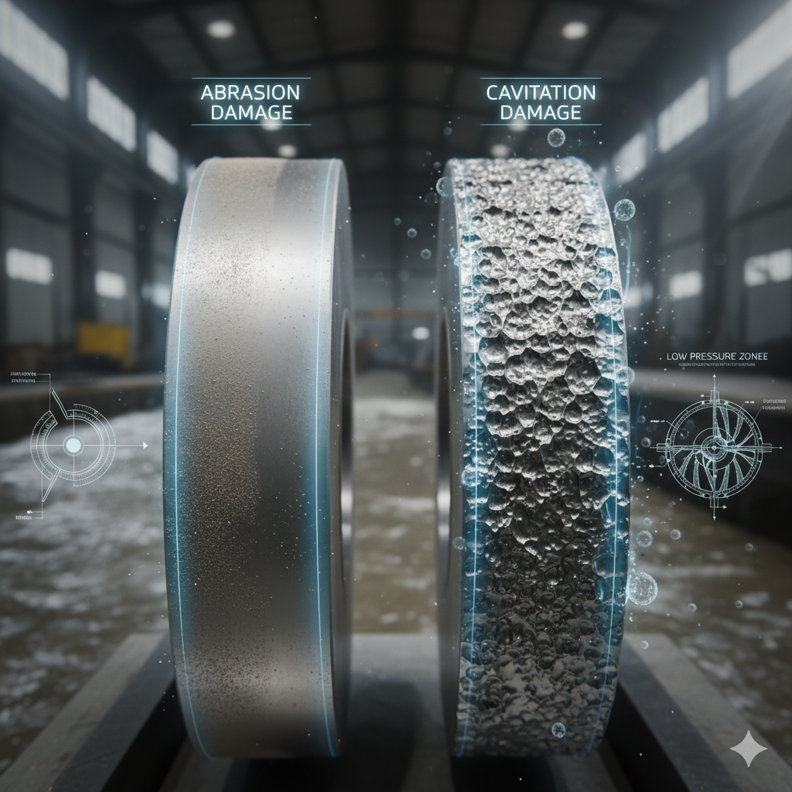

Beneath the surface of seemingly pristine water, an unseen threat silently erodes your hydropower plant's performance and lifespan: sediment and silt.
Defining the Damage: Abrasion vs. Cavitation
To effectively combat the problem, you first need to understand the enemy.
Abrasion: The "Sandblasting" Effect
Abrasion is mechanical wear caused by solid particles in the water. Sand and silt act like sandpaper, constantly grinding down the metal surfaces.
Cavitation: The "Pitting" Effect
Cavitation is damage caused by the implosion of vapor bubbles. These bubbles form in low-pressure zones within the turbine.
The takeaway: If your turbine blades look worn down and smooth, you're primarily dealing with abrasion.
The Right Tool for the Job
Each turbine type has a different vulnerability to these forces.
- Francis/Kaplan: Susceptible to both abrasion and cavitation.
- Pelton: Highly vulnerable to abrasion, less to cavitation.
Protecting Your Investment
The most effective strategy against sediment is prevention. The best line of defense is a well-designed settling basin.
Check Your Intake
If you’re a project owner, take a closer look at your intake. Is sediment building up?
SHARE YOUR EXPERIENCE